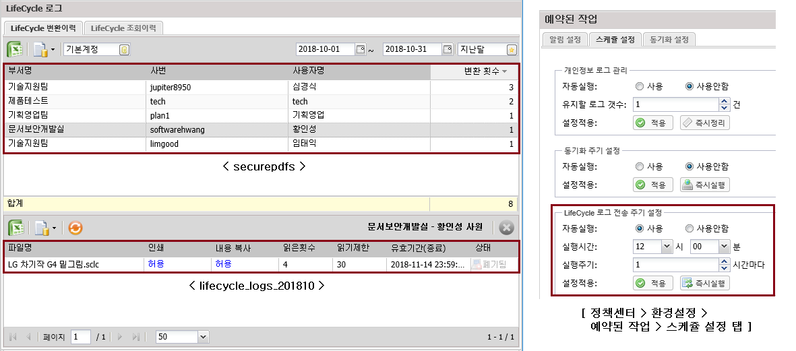
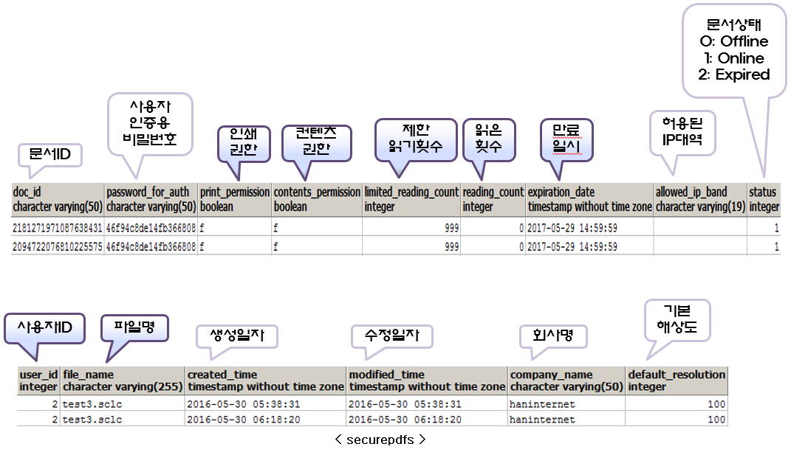
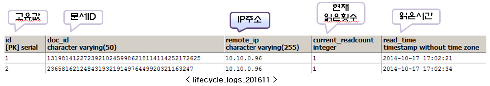

LifeCycle 로그 (securepdfs, lifecycle_logs_{yyyyMM})
-
LifeCycle 로그 페이지는 ShadowCube 사용자가 LifeCycle (.sclc) 문서변환 했을 경우 로그 조회할 수 있는 페이지이다.
-
변환된 LifeCycle 문서는 별도의 조회할 수 있는 서버(lifecycle.shadowcube.co.kr)가 있으며, 이 서버에서 조회된 로그를 정책센터에서 받아서 lifecycle_logs_{yyyyMM} 테이블에 기록한다.
-
lifecycle_logs_{yyyyMM} 테이블은 실시간으로 Update 되는 것이 아니고, 스케쥴에 의해 Update 되며, 정책센터 > 환경설정 > 스케쥴 설정 > LifeCycle 로그 전송 주기 설정에서 그 값을 변경할 수 있다.

※ 테이블 설명
-
securepdfs 테이블은 문서 변환에 대한 로그가 기록된다.
-
lifecycle_logs_{yyyyMM} 테이블은 LifeCycle 문서를 조회했을 경우 기록되는 테이블이다.


이전